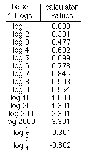

|
|
What would you predict would be the area from 0-3? 0-4? 0-n?
How about finding the area under the curve y = x3 from 0-1? 0-2? 0-n?... Look for patterns!
7. The logs

Notice 0.602 = 2*0.301 or log 4 = 2*log
2 = log
22
and 0.903 = 3*0.301
or log 8 = 3*log
2 = log
23
Generalizing,
a*log
b = log
ba
Some youngsters do the above first, some do the following
first.
Notice also 0.301 + 0.477 = 0.778, which is
log 2 + log
3 = log 6 = log (2*3)
Test out more of these, then generalize.
How about this, log (1/
2) = - log 2.
And log (1/4) = ? Can you generlize these
statements?